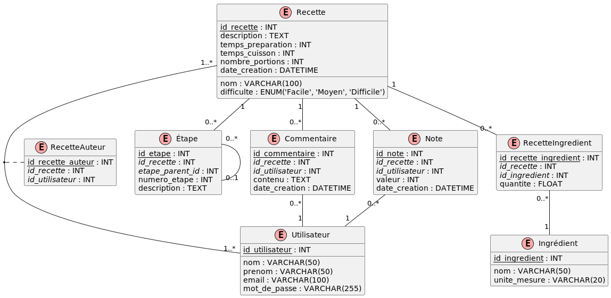

2. Cooking Recipes¶
Creation¶
Refer to the file recettes_create.sql.
DEA¶
PlantUML
@startuml
!define TABLE(name,desc) class name as "desc" << (T,#FFAAAA) >>
!define PK(x) <u>x</u>
!define FK(x) <i>x</i>
hide empty methods
hide empty fields
TABLE(Recette, "Recette") {
PK(id_recette) : INT
nom : VARCHAR(100)
description : TEXT
temps_preparation : INT
temps_cuisson : INT
difficulte : ENUM('Facile', 'Moyen', 'Difficile')
nombre_portions : INT
date_creation : DATETIME
}
TABLE(Utilisateur, "Utilisateur") {
PK(id_utilisateur) : INT
nom : VARCHAR(50)
prenom : VARCHAR(50)
email : VARCHAR(100)
mot_de_passe : VARCHAR(255)
}
TABLE(Ingredient, "Ingrédient") {
PK(id_ingredient) : INT
nom : VARCHAR(50)
unite_mesure : VARCHAR(20)
}
TABLE(Etape, "Étape") {
PK(id_etape) : INT
FK(id_recette) : INT
FK(etape_parent_id) : INT
numero_etape : INT
description : TEXT
}
TABLE(Commentaire, "Commentaire") {
PK(id_commentaire) : INT
FK(id_recette) : INT
FK(id_utilisateur) : INT
contenu : TEXT
date_creation : DATETIME
}
TABLE(Note, "Note") {
PK(id_note) : INT
FK(id_recette) : INT
FK(id_utilisateur) : INT
valeur : INT
date_creation : DATETIME
}
TABLE(RecetteIngredient, "RecetteIngredient") {
PK(id_recette_ingredient) : INT
FK(id_recette) : INT
FK(id_ingredient) : INT
quantite : FLOAT
}
TABLE(RecetteAuteur, "RecetteAuteur") {
PK(id_recette_auteur) : INT
FK(id_recette) : INT
FK(id_utilisateur) : INT
}
Recette "1" -- "0..*" Etape
Recette "1" -- "0..*" Commentaire
Recette "1" -- "0..*" Note
Recette "1" -- "0..*" RecetteIngredient
Recette "1..*" -- "1..*" Utilisateur
(Recette, Utilisateur) .. RecetteAuteur
RecetteIngredient "0..*" -- "1" Ingredient
Commentaire "0..*" -- "1" Utilisateur
Note "0..*" -- "1" Utilisateur
Etape "0..*" -- "0..1" Etape
@enduml

This diagram represents a database structure for a recipe website with the following entities:
- Recette (Recipe): Contains general information about a recipe.
- Utilisateur (User): Represents the website users, who can be recipe authors or leave comments and ratings.
- Ingredient: Lists all possible ingredients.
- Etape (Step): Describes the preparation steps of a recipe.
- Commentaire (Comment): Stores user comments on recipes.
- Note (Rating): Records appreciation ratings given by users to recipes.
- RecetteIngredient (RecipeIngredient): Junction table between Recipe and Ingredient, allowing to specify quantities.
- RecetteAuteur (RecipeAuthor): Junction table between Recipe and User, allowing multiple authors per recipe.
Queries¶
1. Find the recipes requiring less than 30 minutes to prepare.¶
Difficulty: 1
Answer
2. List all ingredients whose unit of measurement is in grams (g).¶
Difficulty: 1
3. Display users whose last name begins with ‘D’.¶
Difficulty: 1
4. Find recipes classified as “Difficult”.¶
Difficulty: 1
Answer
5. List comments created after January 1, 2024.¶
Difficulty: 1
Answer
6. Display recipe names with the first and last name of their author.¶
Difficulty: 2
Answer
7. List all ingredients for the “Quiche Lorraine” recipe with their quantities.¶
Difficulty: 2
Answer
8. Display all preparation steps for the “Ratatouille” recipe in order.¶
Difficulty: 2
Answer
9. Find all recipes with their average ratings (if they have any).¶
Difficulty: 2
Answer
10. List all users and the number of recipes they have created (including those who haven’t created any).¶
Difficulty: 2
Answer
11. Display recipes with their comments, including those without comments.¶
Difficulty: 2
Answer
12. Find recipes that use “Flour” and their quantities.¶
Difficulty: 2
Answer
13. List users who have both created recipes and left comments.¶
Difficulty: 2
Answer
14. Display recipes with their Difficulty and author name, sorted by decreasing Difficulty.¶
Difficulty: 2
Answer
SELECT r.nom AS nom_recette, r.difficulte, u.prenom, u.nom
FROM Recette r
JOIN RecetteAuteur ra ON r.id_recette = ra.id_recette
JOIN Utilisateur u ON ra.id_utilisateur = u.id_utilisateur
ORDER BY CASE
WHEN r.difficulte = 'Difficile' THEN 1
WHEN r.difficulte = 'Moyen' THEN 2
WHEN r.difficulte = 'Facile' THEN 3
END,
r.nom;
15. Find recipes that use all the ingredients of a Niçoise salad (assuming these are: Tuna, Olives, Eggs).¶
Difficulty: 3
Answer
16. Calculate the number of recipes for each Difficulty level.¶
Difficulty: 2
Answer
17. Find the average preparation time of recipes for each number of servings.¶
Difficulty: 2
Answer
18. List the units of measurement used and the number of ingredients for each unit.¶
Difficulty: 2
Answer
19. Find the maximum, minimum, and average rating for each recipe.¶
Difficulty: 2
Answer
20. Count the number of comments per user.¶
Difficulty: 2
Answer
21. Display recipe names and the number of ingredients they contain.¶
Difficulty: 2
Answer
22. Find users who have created the most recipes, with the number of recipes created.¶
Difficulty: 3
Answer
23. Calculate the average preparation time of recipes for each author.¶
Difficulty: 3
Answer
24. List the most used ingredients in recipes, with the number of recipes using them.¶
Difficulty: 3
Answer
25. Find the average rating of recipes for each Difficulty level.¶
Difficulty: 3
Answer
26. Find recipes that have a preparation time above average.¶
Difficulty: 3
Answer
27. List users who have created recipes but have never left a comment.¶
Difficulty: 3
Answer
28. Find recipes that use all the ingredients present in the “Quiche Lorraine” recipe.¶
Difficulty: 4
Answer
SELECT r.nom
FROM Recette r
WHERE NOT EXISTS (SELECT ri.id_ingredient
FROM RecetteIngredient ri
JOIN Recette q ON ri.id_recette = q.id_recette
WHERE q.nom = 'Quiche Lorraine'
AND ri.id_ingredient NOT IN (SELECT id_ingredient
FROM RecetteIngredient
WHERE id_recette = r.id_recette))
AND r.nom != 'Quiche Lorraine'
ORDER BY r.nom;
29. Display recipes whose average rating is higher than the overall average rating of all recipes.¶
Difficulty: 3
Answer
30. Find users who have commented on all the recipes they created.¶
Difficulty: 4
Answer
SELECT u.prenom, u.nom
FROM Utilisateur u
WHERE NOT EXISTS (SELECT ra.id_recette
FROM RecetteAuteur ra
WHERE ra.id_utilisateur = u.id_utilisateur
AND NOT EXISTS (SELECT c.id_commentaire
FROM Commentaire c
WHERE c.id_recette = ra.id_recette
AND c.id_utilisateur = u.id_utilisateur))
AND EXISTS (SELECT 1
FROM RecetteAuteur ra
WHERE ra.id_utilisateur = u.id_utilisateur)
ORDER BY u.nom, u.prenom;
31. List the 3 most commented recipes with their number of comments.¶
Difficulty: 3
Answer
32. Find users who have created recipes and left comments, with the number of recipes and comments.¶
Difficulty: 3
Answer
WITH RecetteCount AS (SELECT id_utilisateur, COUNT(*) AS nb_recettes
FROM RecetteAuteur
GROUP BY id_utilisateur),
CommentCount AS (SELECT id_utilisateur, COUNT(*) AS nb_commentaires
FROM Commentaire
GROUP BY id_utilisateur)
SELECT u.prenom,
u.nom,
COALESCE(rc.nb_recettes, 0) AS nb_recettes,
COALESCE(cc.nb_commentaires, 0) AS nb_commentaires
FROM Utilisateur u
LEFT JOIN RecetteCount rc ON u.id_utilisateur = rc.id_utilisateur
LEFT JOIN CommentCount cc ON u.id_utilisateur = cc.id_utilisateur
WHERE rc.nb_recettes > 0
OR cc.nb_commentaires > 0
ORDER BY nb_recettes DESC, nb_commentaires DESC;
33. Calculate the total score of each recipe based on its ratings (5 points per rating 5, 4 points per rating 4, etc.) and display the top 5.¶
Difficulty: 4
Answer
WITH ScoreCalculation AS (SELECT id_recette,
SUM(CASE
WHEN valeur = 5 THEN 5
WHEN valeur = 4 THEN 4
WHEN valeur = 3 THEN 3
WHEN valeur = 2 THEN 2
WHEN valeur = 1 THEN 1
ELSE 0
END) AS score_total
FROM Note
GROUP BY id_recette)
SELECT r.nom, sc.score_total
FROM Recette r
JOIN ScoreCalculation sc ON r.id_recette = sc.id_recette
ORDER BY sc.score_total DESC
LIMIT 5;
34. Find “superusers” who have created at least 2 recipes and left at least 3 comments.¶
Difficulty: 4
Answer
WITH UserActivity AS (SELECT u.id_utilisateur,
COUNT(DISTINCT ra.id_recette) AS recettes_creees,
COUNT(DISTINCT c.id_commentaire) AS commentaires_laisses
FROM Utilisateur u
LEFT JOIN RecetteAuteur ra ON u.id_utilisateur = ra.id_utilisateur
LEFT JOIN Commentaire c ON u.id_utilisateur = c.id_utilisateur
GROUP BY u.id_utilisateur)
SELECT u.prenom, u.nom, ua.recettes_creees, ua.commentaires_laisses
FROM Utilisateur u
JOIN UserActivity ua ON u.id_utilisateur = ua.id_utilisateur
WHERE ua.recettes_creees >= 2
AND ua.commentaires_laisses >= 3
ORDER BY ua.recettes_creees DESC, ua.commentaires_laisses DESC;
35. Create a hierarchy of recipe steps, assuming each step can have sub-steps (using recursive CTE).¶
Difficulty: 5
Answer
WITH RECURSIVE EtapeHierarchy AS (SELECT id_etape, id_recette, numero_etape, description, etape_parent_id, 0 AS niveau
FROM Etape
WHERE etape_parent_id IS NULL
UNION ALL
SELECT e.id_etape,
e.id_recette,
e.numero_etape,
e.description,
e.etape_parent_id,
eh.niveau + 1
FROM Etape e
JOIN EtapeHierarchy eh ON e.etape_parent_id = eh.id_etape)
SELECT r.nom AS nom_recette,
REPEAT(' ', niveau) || eh.numero_etape || '. ' || eh.description AS etape_detaillee
FROM EtapeHierarchy eh
JOIN Recette r ON eh.id_recette = r.id_recette
ORDER BY r.nom, eh.id_recette, eh.niveau, eh.numero_etape;
36. List all user names and recipe names in a single column, indicating whether it’s a user or a recipe.¶
Difficulty: 3
Answer
37. Categorize recipes based on their total preparation time (preparation + cooking).¶
Difficulty: 3
Using CASE WHEN
'Quick': < 30 minutes'Medium': >= 30 and < 60 minutes'Long': >= 60 minutes
Answer
38. List each recipe with all its ingredients concatenated into a single string.¶
Difficulty: 3
Utilisation de STRING_AGG.
Answer
39. Rank recipes by Difficulty and assign them a rank based on their preparation time.¶
Difficulty: 3
Using “WINDOW FUNCTIONS”.
Answer
40. For each user, find their highest-rated recipe.¶
Difficulty: 5
UsingLATERAL JOIN
Answer
SELECT u.nom AS nom_utilisateur, best_recipe.nom AS meilleure_recette, avg_note
FROM Utilisateur u
LEFT JOIN LATERAL (
SELECT ra.id_utilisateur, r.nom, AVG(n.valeur) AS avg_note
FROM RecetteAuteur ra
JOIN Recette r ON ra.id_recette = r.id_recette
LEFT JOIN Note n ON r.id_recette = n.id_recette
WHERE ra.id_utilisateur = u.id_utilisateur
GROUP BY ra.id_utilisateur, r.id_recette, r.nom
ORDER BY avg_note DESC NULLS LAST
LIMIT 1
) AS best_recipe
ON true
ORDER BY avg_note DESC NULLS LAST;
41. Compare the number of recipes created and the number of comments left by each user, including all users.¶
Difficulty: 4
Using FULL OUTER JOIN
Answer
SELECT COALESCE(u1.nom, u2.nom) AS nom_utilisateur,
COUNT(DISTINCT ra.id_recette) AS recettes_creees,
COUNT(DISTINCT c.id_commentaire) AS commentaires_laisses
FROM (SELECT id_utilisateur, nom FROM Utilisateur) u1
FULL OUTER JOIN RecetteAuteur ra ON u1.id_utilisateur = ra.id_utilisateur
FULL OUTER JOIN (SELECT id_utilisateur, nom FROM Utilisateur) u2 ON u1.id_utilisateur = u2.id_utilisateur
FULL OUTER JOIN Commentaire c ON u2.id_utilisateur = c.id_utilisateur
GROUP BY COALESCE(u1.id_utilisateur, u2.id_utilisateur), COALESCE(u1.nom, u2.nom)
ORDER BY recettes_creees DESC, commentaires_laisses DESC;
42. Count the number of recipes created per month over the past year.¶
Difficulty: 3
Answer
43. Calculate the average rating of recipes by season.¶
Difficulty: 3
Answer
SELECT CASE
WHEN EXTRACT(MONTH FROM n.date_creation) IN (12, 1, 2) THEN 'Hiver'
WHEN EXTRACT(MONTH FROM n.date_creation) IN (3, 4, 5) THEN 'Printemps'
WHEN EXTRACT(MONTH FROM n.date_creation) IN (6, 7, 8) THEN 'Été'
ELSE 'Automne'
END AS saison,
AVG(n.valeur) AS note_moyenne
FROM Note n
GROUP BY CASE
WHEN EXTRACT(MONTH FROM n.date_creation) IN (12, 1, 2) THEN 'Hiver'
WHEN EXTRACT(MONTH FROM n.date_creation) IN (3, 4, 5) THEN 'Printemps'
WHEN EXTRACT(MONTH FROM n.date_creation) IN (6, 7, 8) THEN 'Été'
ELSE 'Automne'
END
ORDER BY note_moyenne DESC;
44. Find the day of the week when users leave the most comments.¶
Difficulty: 3
Answer
45. Calculate the average number of recipes created per month for each year.¶
Difficulty: 4
Answer
SELECT EXTRACT(YEAR FROM date_creation) AS annee,
AVG(recettes_par_mois) AS moyenne_recettes_par_mois
FROM (SELECT DATE_TRUNC('month', date_creation) AS mois,
COUNT(*) AS recettes_par_mois
FROM Recette
GROUP BY DATE_TRUNC('month', date_creation)) AS sous_requete
GROUP BY EXTRACT(YEAR FROM mois)
ORDER BY annee;
46. Identify users who have been most active (in terms of comments) during the last 30 days.¶
Difficulty: 3
Answer
47. Compare the number of recipes created this year versus the previous year, by quarter.¶
Difficulty: 4
Answer
WITH recettes_par_trimestre AS (SELECT EXTRACT(YEAR FROM date_creation) AS annee,
EXTRACT(QUARTER FROM date_creation) AS trimestre,
COUNT(*) AS nombre_recettes
FROM Recette
WHERE (date_creation >= DATE_TRUNC('year', CURRENT_DATE) - INTERVAL '1 year')
GROUP BY EXTRACT(YEAR FROM date_creation), EXTRACT(QUARTER FROM date_creation))
SELECT r1.trimestre,
r1.nombre_recettes AS recettes_annee_precedente,
r2.nombre_recettes AS recettes_annee_courante
FROM recettes_par_trimestre r1
LEFT JOIN recettes_par_trimestre r2
ON r1.trimestre = r2.trimestre AND r2.annee = EXTRACT(YEAR FROM CURRENT_DATE)
WHERE r1.annee = EXTRACT(YEAR FROM CURRENT_DATE) - 1
ORDER BY r1.trimestre;